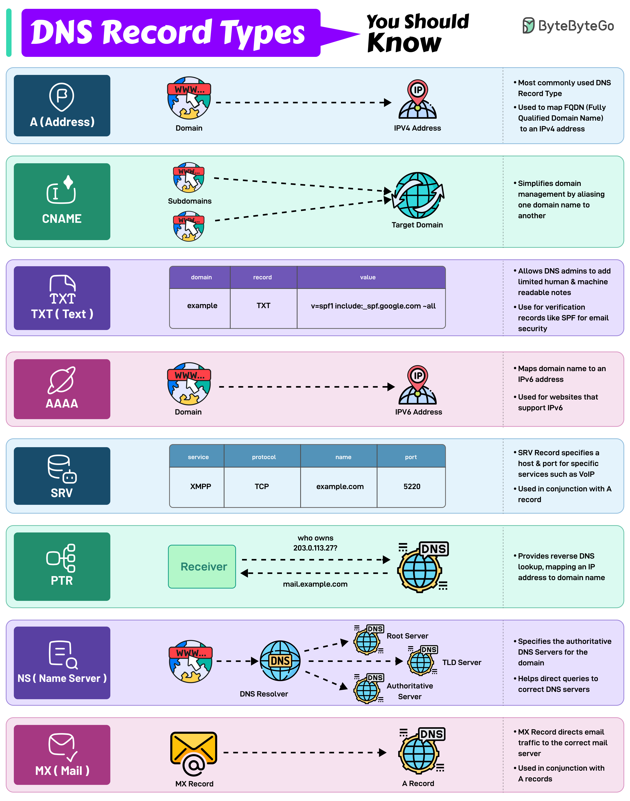

Here are the 8 most commonly used DNS Record Types.
Maps a domain name to an IPv4 address. It is one of the most essential records for translating human-readable domain names into IP addresses.
Used to alias one domain name to another. Often used for subdomains, pointing them to the main domain while keeping the actual domain name hidden.
Similar to an A record but maps a domain name to an IPv6 address. They are used for websites and services that support the IPv6 protocol.
Provides reverse DNS lookup, mapping an IP address back to a domain name. It is commonly used in verifying the authenticity of a server.
Directs email traffic to the correct mail server.
Specifies the authoritative DNS servers for the domain. These records help direct queries to the correct DNS servers for further lookups.
SRV record specifies a host and port for specific services such as VoIP. They are used in conjunction with A records.
Allows the administrator to add human-readable text to the DNS records. It is used to include verification records, like SPF, for email security.